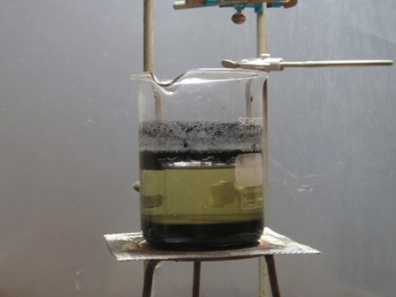
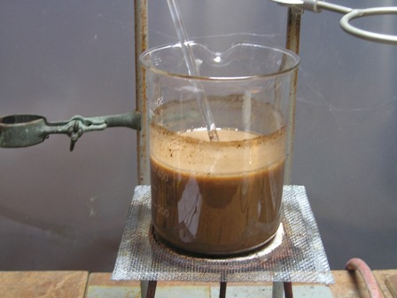
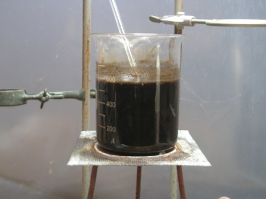
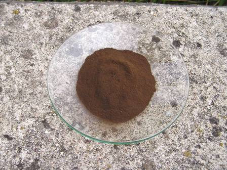
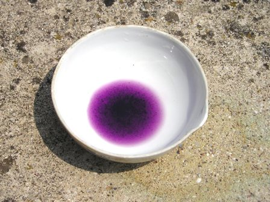
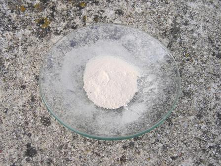

Sfogliando il glorioso e prezioso Treadwell (ai suoi tempi aveva ancora le pagine rilegate in modo da doverle separare col tagliacarte!!!) mi è venuta l'idea di giocare un po' con una vecchia pila zinco-carbone che avevo e di preparare questo "ossido", che rappresenta una buona occasione per studiare un po' la chimica del manganese, non sempre conosciuta come si deve (almeno da me...).
Devo essere sintetico, altrimenti anche stavolta il post verrebbe troppo lungo.
1- Smontare completamente una pila zinco-carbone formato torcia (quelle più grosse, dalla quale si può anche recuperare l'utile elettrodo di carbone) separando i tre componenti, zinco, carbone, miscela elettrolitica.
 2- La miscela elettrolitica è costituita da biossido di manganese MnO2, carbone e cloruro di ammonio NH4Cl. A noi interessa il manganese, che va pertanto separato. L'unico modo per farlo è solubilizzare il biossido (separandolo dal carbone) e precipitarlo come insolubile (separandolo dal resto).
2- La miscela elettrolitica è costituita da biossido di manganese MnO2, carbone e cloruro di ammonio NH4Cl. A noi interessa il manganese, che va pertanto separato. L'unico modo per farlo è solubilizzare il biossido (separandolo dal carbone) e precipitarlo come insolubile (separandolo dal resto).
3- Porre in un becker da 600 ml la massa nera e, ALL'APERTO, aggiungere 100 ml di HCl conc., mescolando bene ogni tanto. Si ha svolgimento di cloro, secondo la reazione:
MnO2 + 4 HCl --> MnCl2 + Cl2 + 2 H2O
Alla fine riscaldare un pochino per essere sicuri che tutto il manganese sia stato solubilizzato.
4- Diluire la brodaglia nera con 500 ml di aqua mescolando bene e lasciar decantare pazientemente. Il carbone si separa (un po' galleggia, il resto va in basso).

Quando la soluzione ha riposato quanto basta, pipettare con attenzione il liquido, che deve risultare perfettamente limpido, senza traccia di carbone.
5- Ora precipitiamo il manganese come idrossido con NaOH, prima neutralizzando l'HCl in eccesso e poi fino a reazione neutra.
MnCl2 + 2 NaOH --> Mn(OH)2 + 2 NaCl
e qui comincia il bello, perchè l'idrossido di manganese puro (bianco) è estremamente difficile da ottenere in quanto esso assorbe ossigeno dovunque si trovi trasformandosi parzialmente in manganito manganoso (marrone scuro) secondo le reazioni:
2 Mn(OH)2 + O2 --> 2 H2MnO3
e l'acido manganoso reagisce sbito con l'idrossido formando il suo sale:
H2MnO2 + Mn(OH)2 --> Mn[MnO3] + 2 H2O

L'ossidazione è solo parziale ed aspettare che coinvolga tutta la massa sarebbe troppo lungo, allora...
7- L'ossidazione è totale ed istantanea con vari ossidanti, fra i quali gli ipocloriti, secondo la reazione:
Mn(OH)2 + ClO- --> H2MnO3 + Cl-
quindi aggiungere mescolando 200 ml di NaClO al 5%, notando che istantaneamente tutta la massa si colora quasi di nero.

8- Lasciar sedimentare anche stavolta (anzi più e più volte!) lavando ogni volta con 500 ml di acqua. Questa è la parte molto lunga e noiosa della procedura.Alla fine filtrare (con molta difficoltà ed in fasi ripetute!) su buchner il precipitato scuro e lasciar asciugare. La resa è stata di 16 g, che naturalmente non avrà purezza analitica (contiene un po' di ferro), ma non era questo lo scopo del lavoro.
9- Il manganito manganoso Mn2O3 (NON è l'ossido del manganese trivalente!
E' Mn[MnO3] si presenta come una polvere marrone.

[Da questo composto si potrebbero poi ottenere i sali del manganese bivalente esenti da ferro con una opportuna procedura che mi ha impegnato per una montagna di tempo ma che esula da queste note].
10- I sali del manganese trivalente sono pochissimi (alcuni complessi) e poco stabili e si possono formare dal manganito manganoso; l'unico sale Mn+++ facile e almeno visibile per un po' è il fosfato MnPO4, di colore viola intenso.
Sciogliere in una capsulina una puntina di spatola di manganito manganoso con qualche ml di acido fosforico concentrato:
Mn[MnO3] + 2 H3PO4 --> 2 MnPO4 + 3 H2O
Si ha parziale soluzione e colorazione viola.


Notare che dopo pochi minuti il colore viola tende a virare a grigio e si ha precipitazione di fosfato di manganese "normale" Mn++ stabile.
Chi volesse "giocare" chimicamente con le pile, sbudellandole, ora ha un po' di materiale in più..
.
2 commenti